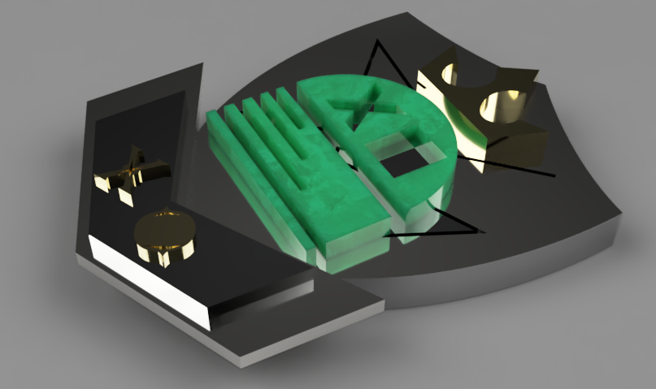
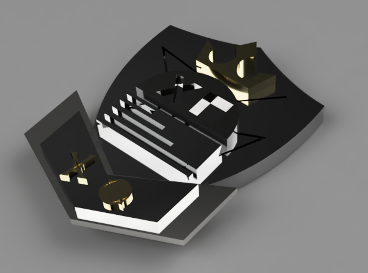
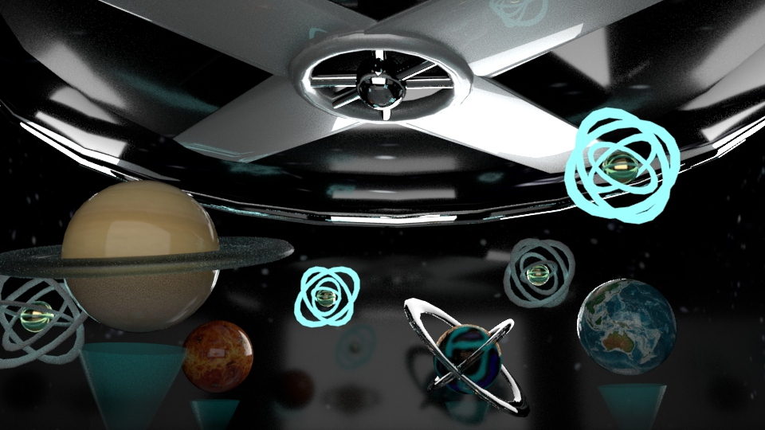

COAT OF ARMS
Models of a Coat of Arms emblem inspired by the San Jose City Hall and Laura Kimpton’s “XO” Sculpture. Created using Fusion 360. And then Made into an AR model.


CARROX
In this work I explored the idea of “What if animals merged with food?” By combining a fox and a carrot. The model was made in Fusion 360 and then 3D printed.
A TASTE OF SPACE
This is a Virtual Installation I made using Maya. It was made to be presented as a virtual installation that gives you a tiny taste of outer space with a 3D view of the planets of our solar systems and some distant galaxies and stars. The big fan is there to make the room/scene feel cold just like outer space.


Emblem STAMP
Stamp block inspired by the San Jose City Hall and Laura Kimpton’s “XO” Sculpture. Created using Fusion 360.